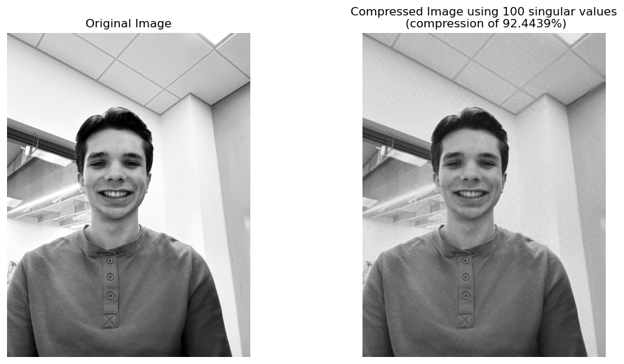
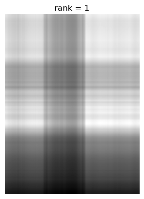
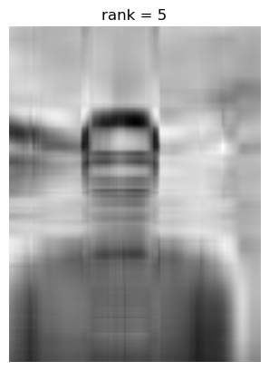
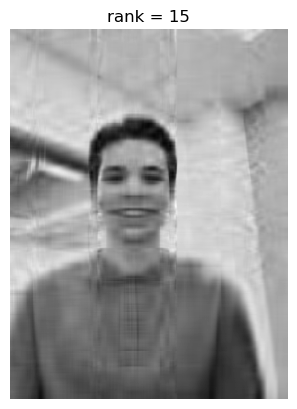

Image Compression Techniques - SVD


As we can see when we only use the largest singular value the quality is so poor we can't even make out what it is supposed to be. Let's try using more singular values to see what this renders.
#### D) Experimenting with how many singular values must be retained to have acceptable image quality.
```python
#loop for each selected rank display compressed image and compression ratio and %
rank = [5,15,25,50,100]
for r in rank:
Ak = U[:,:r] @ S[0:r,:r] @ VT [:r,:]
compressionRatio = r * (Ak.shape[0] + Ak.shape[1]) / (Ak.shape[0] * Ak.shape[1])
compressionRatioPercent = 100 - round(compressionRatio * 100, 4)
print(f'Compression ratio with {r} singular values:{compressionRatio} \nthis image was compressed by: {compressionRatioPercent}%')
# Display the image corresponding to A1
plt.imshow(Ak, cmap='gray')
plt.title('rank = ' + str(r))
plt.axis('off')
plt.show()
```
Compression ratio with 5 singular values:0.0037780656303972367
this image was compressed by: 99.6222%

Compression ratio with 15 singular values:0.01133419689119171
this image was compressed by: 98.8666%

Compression ratio with 25 singular values:0.018890328151986182
this image was compressed by: 98.111%
Compression ratio with 50 singular values:0.037780656303972364
this image was compressed by: 96.2219%
Compression ratio with 100 singular values:0.07556131260794473
this image was compressed by: 92.4439%
We see that the rank 100 approximation gives us the best combination between acceptable image quality and sizable compression of
roughly 92%!
```python
#subplots to print side by side
#original image
plt.figure(figsize=(12, 6))
plt.subplot(1, 2, 1)
plt.axis('off')
plt.title('Original Image')
plt.imshow(A, cmap='gray')
#compressed image
plt.subplot(1, 2, 2)
plt.axis('off')
plt.title(f'Compressed Image using {r} singular values\n (compression of {compressionRatioPercent}%)')
plt.imshow(Ak, cmap='gray')
plt.show()
```